Introduction to scCulturePredict
Niccolò Bianchi
2025-08-01
Source:vignettes/scCulturePredict-introduction.Rmd
scCulturePredict-introduction.RmdIntroduction
scCulturePredict is a comprehensive R package for
analyzing single-cell RNA-seq data with a focus on predicting cell
culture media from transcriptomic profiles. The package provides tools
for loading, preprocessing, and analyzing single-cell data using pathway
analysis and dimensionality reduction techniques.
This vignette provides an introduction to the core functionality of
the scCulturePredict package and demonstrates a basic
workflow using example data.
Features
The scCulturePredict package offers several key
features:
- Data loading and preprocessing with robust error handling
- Dimensionality reduction using UMAP
- KEGG pathway analysis for biological interpretation
- Prediction of cell culture media using similarity-based and machine learning approaches
- Evaluation and visualization of prediction results
Installation
From Bioconductor
The scCulturePredict package is available on
Bioconductor and can be installed using the following commands:
# Package installation (for reference only - package should be installed separately):
# if (!requireNamespace("BiocManager", quietly = TRUE))
# install.packages("BiocManager")
# BiocManager::install("scCulturePredict")From GitHub
The development version can be installed directly from GitHub:
# install.packages("devtools")
devtools::install_github("nccb/scCulturePredict")Getting Started
Example Data
scCulturePredict comes with example data in two formats
that can be accessed using the system.file() function:
- CSV format - Simple comma-separated files with counts matrix and metadata
- 10X Genomics format - Industry standard format with barcodes.tsv, features.tsv, and matrix.mtx files
# Get the path to CSV format example data
csv_data_dir <- system.file("extdata", "example_data", package = "scCulturePredict")
# Get the path to 10X format example data
tenx_data_dir <- system.file("extdata", "example_data_10x", package = "scCulturePredict")Basic Workflow
The typical workflow for using scCulturePredict consists
of the following steps:
- Load single-cell data
- Preprocess the data
- Perform dimensionality reduction
- Conduct pathway analysis
- Predict cell culture media
- Evaluate and visualize results
Quick Start: Complete Analysis with One Function
For most users, the easiest way to run the complete scCulturePredict
analysis is using the main scumap() function, which
performs all steps automatically:
# Complete analysis with one function call
results <- scumap(
data_dir = csv_data_dir,
kegg_file = system.file("extdata", "kegg", "example_pathway.keg", package = "scCulturePredict"),
output_dir = "./scumap_results",
experiment_id = "example_analysis",
progress = TRUE, # Show progress bar
verbose = TRUE # Print detailed messages
)
# Access the final results
seurat_object <- results$seurat_object
pathway_results <- results$pathway_results
prediction_results <- results$prediction_results
evaluation_results <- results$evaluation_results
# View UMAP coordinates with predictions
head(seurat_object@meta.data[, c("UMAP_1", "UMAP_2", "sample", "classification_pred")])
# Check prediction accuracy
table(seurat_object$sample, seurat_object$classification_pred)The scumap() function automatically: - Loads and
validates your data - Performs preprocessing and quality control -
Generates UMAP coordinates - Conducts KEGG pathway analysis - Makes
predictions using both similarity and machine learning approaches -
Evaluates prediction performance - Creates publication-ready
visualizations - Saves all results to the specified output directory
All plots and results are automatically saved to
./scumap_results/ for immediate use!
Advanced Usage: Step-by-Step Workflow
For users who need more control over individual steps or want to understand the underlying processes, the following sections demonstrate each step in detail.
1. Load Data
The scCulturePredict package can load data in both CSV
and 10X Genomics formats. Here are examples of both approaches:
Loading CSV Format Data
# Load the CSV format example data
seurat_object_csv <- load_data(
data_dir = csv_data_dir,
experiment_id = "example",
min_cells = 3,
min_features = 10,
verbose = TRUE
)Loading 10X Genomics Format Data
# Load the 10X format example data
seurat_object_10x <- load_data(
data_dir = tenx_data_dir,
experiment_id = "example_10x",
min_cells = 3,
min_features = 10,
verbose = TRUE
)
# Alternatively, you can use Seurat's Read10X function directly
tenx_data <- Read10X(tenx_data_dir)
seurat_object_10x_direct <- CreateSeuratObject(
counts = tenx_data,
min.cells = 3,
min.features = 10
)2. Preprocess Data
Next, we preprocess the data, which includes normalization, scaling, and identifying variable features:
# Preprocess the data
seurat_object <- preprocess_data(
seurat_object = seurat_object,
normalization_method = "LogNormalize",
scale_factor = 10000,
variable_features_n = 2000,
verbose = TRUE
)3. Perform Dimensionality Reduction
We then reduce the dimensionality of the data using UMAP:
# Perform dimensionality reduction
seurat_object <- reduce_dimensions(
seurat_object = seurat_object,
pca_dims = 30,
umap_dims = 2,
verbose = TRUE
)Let’s visualize the UMAP embedding:
# Create UMAP visualization
umap_plot <- create_umap_plot(
seurat_object = seurat_object,
color_by = "sample",
point_size = 1.2,
title = "UMAP of Example Data"
)
# Display the plot
print(umap_plot)
4. Pathway Analysis
Now we perform KEGG pathway analysis to identify biological pathways that are active in our data:
# Path to KEGG data
kegg_file <- system.file("extdata", "kegg", "example_pathway.keg", package = "scCulturePredict")
# Parse KEGG data
kegg_data <- parse_kegg_keg(kegg_file, verbose = TRUE)
# Build pathway fingerprints
pathway_matrix <- build_fingerprints(
seurat_object = seurat_object,
kegg_data = kegg_data,
verbose = TRUE
)5. Predict Cell Culture Media
We can now predict the culture media using both similarity-based and SVM approaches:
# Similarity-based prediction
similarity_results <- predict_by_similarity(
pathway_matrix = pathway_matrix,
signature_matrix = signature_matrix,
threshold = 0.1
)
# SVM-based prediction
svm_results <- predict_by_svm(
pathway_matrix = pathway_matrix,
seurat_object = seurat_object
)6. Evaluate and Visualize Results
First, let’s add some mock prediction results to demonstrate the evaluation functionality:
Finally, we evaluate the prediction results and create visualizations:
# Evaluate predictions
evaluation_results <- evaluate_predictions(seurat_object)Create accuracy plot
accuracy_plot <- create_accuracy_plot( evaluation_results = evaluation_results, method = “svm”, title = “SVM Prediction Accuracy” )
Create confusion matrix heatmap
confusion_plot <- create_confusion_heatmap( evaluation_results = evaluation_results, method = “direct”, title = “Direct Prediction Confusion Matrix” )
Display the plot
print(confusion_plot)
# Saving Results
You can save all visualization plots to a directory:
``` r
# Create directory for results
results_dir <- "scCulturePredict_results"
if (!dir.exists(results_dir)) dir.create(results_dir)
# Save visualization plots
save_visualization_plots(
seurat_object = seurat_object,
evaluation_results = evaluation_results,
output_dir = results_dir,
prefix = "example",
verbose = TRUE
)Working with Different Data Formats
CSV Format
The CSV format is simpler and consists of: - A counts matrix with genes as rows and cells as columns - A metadata file with cells as rows and annotations as columns
This format is easy to create and manipulate using standard R
functions like read.csv() and write.csv().
10X Genomics Format
The 10X Genomics format is an industry standard and consists of: -
barcodes.tsv - Contains cell barcodes -
features.tsv - Contains gene/feature information -
matrix.mtx - Contains the count matrix in sparse format
This format is more memory-efficient for large datasets and is widely used in single-cell analysis.
Conclusion
This vignette has demonstrated the basic workflow for using the
scCulturePredict package to analyze single-cell RNA-seq
data and predict cell culture media, with support for both CSV and 10X
Genomics data formats. For more advanced usage and customization
options, please refer to the advanced vignette and the function
documentation.
Session Info
sessionInfo()
#> R version 4.5.1 (2025-06-13)
#> Platform: x86_64-pc-linux-gnu
#> Running under: Ubuntu 24.04.2 LTS
#>
#> Matrix products: default
#> BLAS: /usr/lib/x86_64-linux-gnu/openblas-pthread/libblas.so.3
#> LAPACK: /usr/lib/x86_64-linux-gnu/openblas-pthread/libopenblasp-r0.3.26.so; LAPACK version 3.12.0
#>
#> locale:
#> [1] LC_CTYPE=C.UTF-8 LC_NUMERIC=C LC_TIME=C.UTF-8
#> [4] LC_COLLATE=C.UTF-8 LC_MONETARY=C.UTF-8 LC_MESSAGES=C.UTF-8
#> [7] LC_PAPER=C.UTF-8 LC_NAME=C LC_ADDRESS=C
#> [10] LC_TELEPHONE=C LC_MEASUREMENT=C.UTF-8 LC_IDENTIFICATION=C
#>
#> time zone: UTC
#> tzcode source: system (glibc)
#>
#> attached base packages:
#> [1] stats graphics grDevices utils datasets methods base
#>
#> other attached packages:
#> [1] ggplot2_3.5.2 Seurat_5.3.0 SeuratObject_5.1.0
#> [4] sp_2.2-0 scCulturePredict_0.99.9 BiocStyle_2.36.0
#>
#> loaded via a namespace (and not attached):
#> [1] deldir_2.0-4 pbapply_1.7-4 gridExtra_2.3
#> [4] rlang_1.1.6 magrittr_2.0.3 RcppAnnoy_0.0.22
#> [7] spatstat.geom_3.5-0 matrixStats_1.5.0 ggridges_0.5.6
#> [10] compiler_4.5.1 png_0.1-8 systemfonts_1.2.3
#> [13] vctrs_0.6.5 reshape2_1.4.4 stringr_1.5.1
#> [16] pkgconfig_2.0.3 fastmap_1.2.0 labeling_0.4.3
#> [19] promises_1.3.3 rmarkdown_2.29 ragg_1.4.0
#> [22] purrr_1.1.0 xfun_0.52 cachem_1.1.0
#> [25] jsonlite_2.0.0 goftest_1.2-3 later_1.4.2
#> [28] spatstat.utils_3.1-5 irlba_2.3.5.1 parallel_4.5.1
#> [31] cluster_2.1.8.1 R6_2.6.1 ica_1.0-3
#> [34] spatstat.data_3.1-6 stringi_1.8.7 bslib_0.9.0
#> [37] RColorBrewer_1.1-3 reticulate_1.43.0 spatstat.univar_3.1-4
#> [40] parallelly_1.45.1 lmtest_0.9-40 jquerylib_0.1.4
#> [43] scattermore_1.2 Rcpp_1.1.0 bookdown_0.43
#> [46] knitr_1.50 tensor_1.5.1 future.apply_1.20.0
#> [49] zoo_1.8-14 sctransform_0.4.2 httpuv_1.6.16
#> [52] Matrix_1.7-3 splines_4.5.1 igraph_2.1.4
#> [55] tidyselect_1.2.1 abind_1.4-8 yaml_2.3.10
#> [58] spatstat.random_3.4-1 spatstat.explore_3.5-2 codetools_0.2-20
#> [61] miniUI_0.1.2 listenv_0.9.1 plyr_1.8.9
#> [64] lattice_0.22-7 tibble_3.3.0 withr_3.0.2
#> [67] shiny_1.11.1 ROCR_1.0-11 evaluate_1.0.4
#> [70] Rtsne_0.17 future_1.67.0 fastDummies_1.7.5
#> [73] desc_1.4.3 survival_3.8-3 polyclip_1.10-7
#> [76] fitdistrplus_1.2-4 pillar_1.11.0 BiocManager_1.30.26
#> [79] KernSmooth_2.23-26 plotly_4.11.0 generics_0.1.4
#> [82] RcppHNSW_0.6.0 scales_1.4.0 globals_0.18.0
#> [85] xtable_1.8-4 glue_1.8.0 lazyeval_0.2.2
#> [88] tools_4.5.1 data.table_1.17.8 RSpectra_0.16-2
#> [91] RANN_2.6.2 fs_1.6.6 dotCall64_1.2
#> [94] cowplot_1.2.0 grid_4.5.1 tidyr_1.3.1
#> [97] nlme_3.1-168 patchwork_1.3.1 cli_3.6.5
#> [100] spatstat.sparse_3.1-0 textshaping_1.0.1 spam_2.11-1
#> [103] viridisLite_0.4.2 dplyr_1.1.4 uwot_0.2.3
#> [106] gtable_0.3.6 sass_0.4.10 digest_0.6.37
#> [109] progressr_0.15.1 ggrepel_0.9.6 htmlwidgets_1.6.4
#> [112] farver_2.1.2 htmltools_0.5.8.1 pkgdown_2.1.3
#> [115] lifecycle_1.0.4 httr_1.4.7 mime_0.13
#> [118] MASS_7.3-65